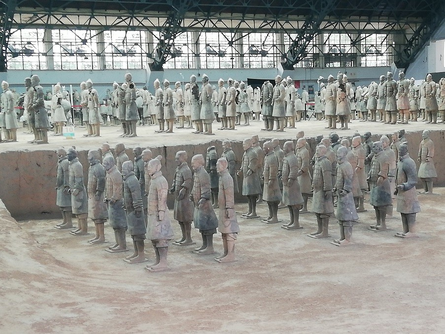
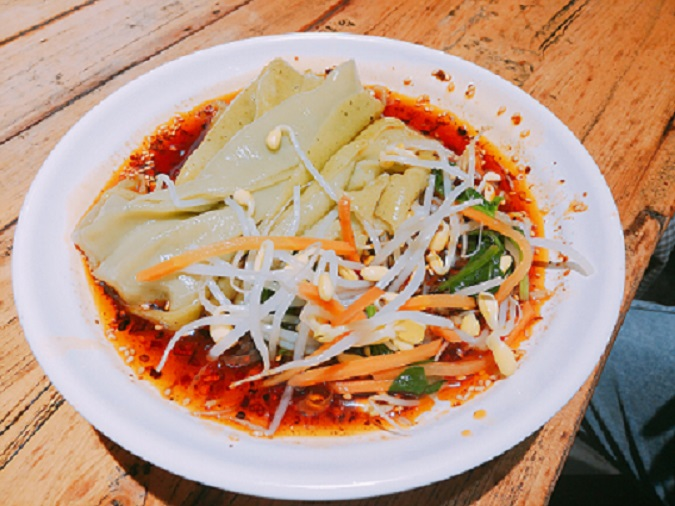

游5公交车线是专门开往兵马俑和城区的线路，到兵马俑9块钱，到华清池7块钱。 兵马俑过于偏僻，所以要早一点出发哦，不过有专线公交也不用担心坐过站什么的。
华清池本来不在我们的计划当中，本来准备直接坐到兵马俑下车，但是后来想了想还是到华清池逛逛算了。
华清池下面是一个大院子，有池塘有舞台，往上走就是骊山了。
骊山上大部分景点都是跟蒋介石有关系，孤陋寡闻的我第一次了解到蒋介石和骊山的故事也第一次认识到骊山在华清池后面。
我们爬骊山爬了一会儿就下来了，一个是因为太久没有运动有点爬不动了，还有就是因为时间不早了，要去下一个景点了。
兵马俑其实有一些让我们失望吧，位置太偏了我们只能在周边的黑心小店里面吃了午饭。
进了园区，感觉园区没有建好，还有很多地方在施工。然后看到了兵马俑也没有很让人惊喜，发而人太多又不能好好看一看观赏观赏。
园区里面有一个问题就是休息的座位太少了，好多人就席地而坐或者坐在花坛的边边上，旅游感觉不是很好。

